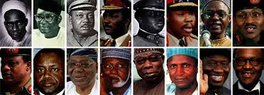

Past and Present Nigeria Head of States/Presidents
The federal government of Nigeria is composed of three distinct branches: legislative, executive,
and judicial,Past and Present Nigeria Head of States/Presidents
whose powers are vested by the Constitution of Nigeria in the National Assembly, the President, and the federal
courts, including the Supreme Court, respectively.
For more information about the structure of the Nigerian government, visit this site wikipedia.